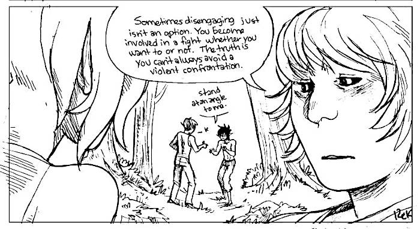

About
About Projects
Projects Games
Games Stories
Stories Store
Store Hobby
Hobby Notes
Notes How-to
How-toSelf-defense notes
Your build, suppleness, fitness, agility, age and mental condition all influence the best style of fighting for you. If you are tall, you have the reach to box, and can keep people away from you. Shorter people need to be able to duck and weave to come inside an attacker's reach. If you are big and powerful, you can grab hold of people and put locks on them.
Whatever the style you prefer, you have to be able to adapt it to the situation that you are in. The more styles you know, the more knowledge you got, the more equipped you are.
Train with as many different people as possible. Train with people with differing heights, age and strengtht so your reactions don't become stereotyped. You can't pick an aggressor out there, he is going to pick you. So don't get set in your ways.
Fighting stance
- Well balanced, but that allows you to move easily in any direction.
- Keep your feet about shoulder width apart, with your weigth balanced equally on both sides.
- Stand at an angle to an attacker, at around 30 degrees or so.
- Stand on the balls of you feet so your weigth and center of balance is in the middle.
- Keep your knees slightly bent.
- Keep your chin down.
- Keep your elbows to your side and your hands up.
Don't form a fist with your hands, you have more flexibility with your hands open. Standing with your fists clenched like a boxer signals an intention to stand and fight and may trigger a situation you want to avoid.
Weapons of the body
Hands
It is difficult to to develop a hard, accurate punch, but you can strike easily and effectively with the fingers. Jab your fingers into your opponent's eyes. Use all your fingers, not just one, or two, but not locked straight (in a slight curve) so that if you miss and hit a bone you don't break them. Eye pain is a good way to distract an attacker. A palm strike is another effective method, drive your palm back and then up and forward into the underside of your opponent's chin, or nose. Twist your body into it, and try to step forward as you stike to put your weight behind the blow.
Feet
Like a punch, a good kick is difficult to master or to be accurate with. A good option is a side kick. Stay balanced, and stomp on your opponent's knee, calf, or foot, and bring your foot back as fast as possible.
Knees
Aim for the groin, or knee your opponent hard into the side of their thigh. Aiming for the thigh can create a condition known as Dead Leg. The impact can cause the thigh muscles to be crushed against the underlying thigh bone (femur).
Teeth
If stuck in a precarious position, bite. Teeth can be a devastating weapon, especially when your life is threatened. Sink your teeth into whatever you can get a hold of and don't let go. Bite the ear, neck, or throat. Rip, and tear.
Head
The bone in the forehead is very strong. If your attacker is in front of you and holding it, use your forehead to butt your attacker anywhere in the face. Keep your chin tucked in to protect your neck, and don't bite your tongue.
The back of the head is the hardest part of the skull. If an attacker is holding you from the back, snap your head back into their face.
The top of the head is vulnerable, and a strike to it or to the temples can be very dangerous. Never strike someone in the temples unless your life is at risk.
Weak points on the human body
When the head goes, the rest of the body will follow. The best way to put someone on the ground is to push their chin back, then to then turn their head.


Featured images on this page are from a comic I'm working on named hakum. The sequence in question is named tracking.